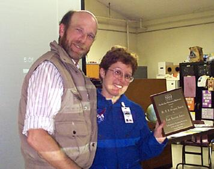

SJAA Ephemeris May 2000 |
SJAA Home |
Contents |
Previous |
Next
SJAA Ephemeris May 2000 |
SJAA Home |
Contents |
Previous |
Next
SJAA People
Congratulations
... to Jim Van Nuland and his wife, celebrating their 40th wedding anniversary this month!
Dave North presents the A.B. Gregory Award for 2000 to an astonished Jane Houston Jones in the glow of the computer projector. Jane is dressed in her official NASA flight suit. The award was presented just before Jane and Mike Koop conducted the March program on their visit to the Leonid meteor storm last November.
|

|
For Sale
Unassembled AstroSystems Telekit manufactured for a 14.5" f/5 mirror. The kit is in perfect condition and ready to finish and assemble, no optics included. Ready for pick-up in Campbell. $1,000. Morris Jones (415) 453-2885 or (408) 836-4300, mojo@whiteoaks.com.
Mail to:
Editors
Copyright © 2000 San Jose Astronomical Association
Last updated:
February 05, 2002
Previous | Contents | Next